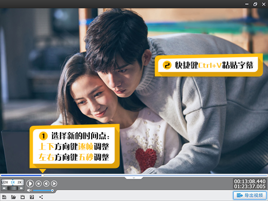

如何修改字幕的时间及内容
作为一款颠覆性的视频剪辑软件， 爱剪辑创新的人性化界面令爱粉们不仅能够快速上手视频剪辑，无需花费大量的时间学习，且爱剪辑超乎寻常的启动速度、运行速度也使爱粉们视频剪辑过程更加快速、得心应手！按照如下步骤即可使用爱剪辑快速进行视频剪辑：
爱剪辑创新的人性化界面令爱粉们不仅能够快速上手视频剪辑，无需花费大量的时间学习，且爱剪辑超乎寻常的启动速度、运行速度也使爱粉们视频剪辑过程更加快速、得心应手！按照如下步骤即可使用爱剪辑快速进行视频剪辑：
一、快速添加视频
添加视频主要有如下两种方法：
方法1、打开视频文件所在文件夹，将视频文件直接拖曳到爱剪辑“视频”选项卡即可。
图1：拖曳视频导入软件
方法2、在软件主界面顶部点击“视频”选项卡，在视频列表下方点击“添加视频”按钮，或者双击 面板下方“已添加片段”列表的文字提示处，即可快速添加视频。使用这两种方法添加视频时， 均可在弹出的文件选择框，对要添加的视频进行预览，然后选择导入即可。

图1：拖曳视频导入软件
二、两种方法自由剪辑视频片段，精确踩点
方法1、方法1、在主界面右上角预览框的时间进度条上，点击向下凸起的向下箭头（快捷键Ctrl+E），打开“创新式时间轴”面板，并结合“音频波形图”和“超级剪刀手”精确踩点。 通过“创新式时间轴”剪辑视频片段时，涉及的快捷键如下：
图1：拖曳视频导入软件